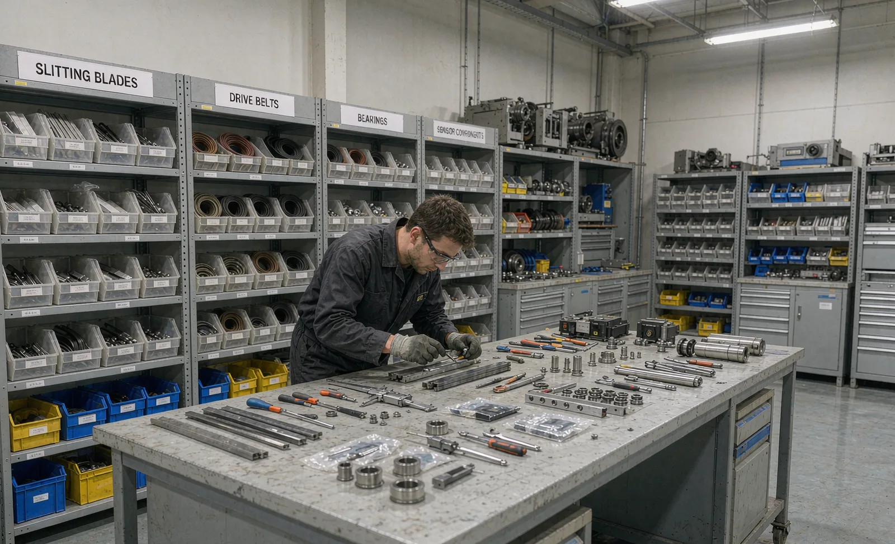
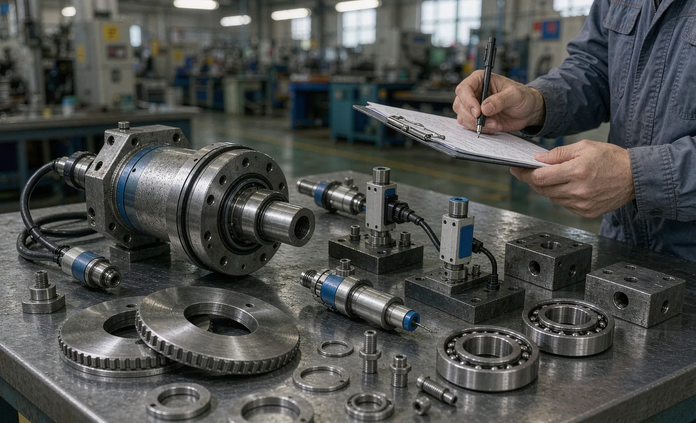

Published September 16, 2026 | By HDPTH Technical Editorial Team

When buyers compare slitter rewinder offers, warranty and spares are often treated as boilerplate to skim. They should not be. The difference between a vague 12-month “parts only” clause and a defined warranty with a service SLA is measured in lost shifts when a load cell fails in month eleven, or a blade holder arrives eight weeks after it was ordered — and for an international buyer, shipping time compounds everything.
What a good warranty actually covers
A workable slitter rewinder warranty has four parameters, and all four should be explicit in the contract:
| Parameter | What to require | Why it matters |
|---|---|---|
| Duration | 12 months from commissioning or 18 from shipment, whichever first | Prevents the warranty expiring before the machine even runs |
| Scope | Defective parts replaced free of charge, including labour and reasonable travel for genuine defects | “Parts only” leaves you paying supplier labour for supplier defects |
| Exclusions | Defined in a written list referencing the maintenance manual — not a blanket clause | Ambiguous exclusions are where warranty disputes are won |
| Remedy time | Defect parts shipped within an agreed number of working days of confirmation | A warranty is only as good as the speed of the remedy |
Also clarify the position on third-party components. Reputable builders use name-brand drives, PLCs and sensors; the machine warranty should cover integration faults even where the component itself carries the manufacturer’s warranty. And link the FAT contractually to warranty: defects found at FAT are corrected before shipment.
Recommended spare parts list: buy by tier, not by catalogue
Suppliers will happily quote a full recommended spares package. Buy it selectively, in three tiers:
- Tier 1 — with the machine (commissioning and emergency): slitting blades and holders for every method on your machine, a set of drive belts, air filters, fuses and contactors for each rating used, one or two of each sensor type (proximity, photoeye, web-break), a seal and gasket set, and the special tools listed in the manual.
- Tier 2 — within the first year (planned wear): shear blade regrind stock, chuck and shaft wear components, drive cooling-fan kits, brake/clutch friction parts if fitted. Buy after you have real usage data.
- Tier 3 — strategic long-lead items: a load cell set, a web-guide sensor, or main drive components. These are expensive and rarely fail — buy only where the machine is output-critical and lead times are months. Ask for lead times per item in the offer; that table often decides the Tier-3 list for you.
Insist on the parts list with part numbers, revisions and lead times as a contract document. It is also your protection against the supplier later claiming a component is obsolete and upgrade-only.
Support SLA: what a realistic one looks like
A service-level agreement converts “we support you” into something measurable. For international B2B machinery, a fair and enforceable baseline is:
- Remote technical response within 4 working hours — 2 for line-down emergencies — meaning a qualified engineer actively engaged, not an acknowledgment.
- A named service contact and a written escalation path with defined time steps.
- Remote diagnostics access to the control system, per the connectivity terms in your remote diagnostics and IoT specification.
- On-site service quoted within 5 working days of request, with stated mobilisation time and daily rates fixed for the warranty period.
- Spare-parts orders confirmed with dispatch date within 2 working days.
Consumables budgeting without guesswork
Consumables — blades, belts, filters, lubricants, air-system parts — are excluded from warranties by definition, and they are the recurring cost buyers forget to model. Start from the supplier’s quoted prices on the recommended list, estimate annual volume from planned tonnage and blade-change intervals, and sanity-check the total against 0.5–2% of the machine price per year. After twelve months of operation, re-baseline the budget from recorded usage — the machine’s production data will tell you exactly how often blades and filters actually turn over.

Get the warranty and spares terms in writing
Send HDPTH your utilisation plan and material mix. We will quote the machine with a defined warranty, a tiered spare-parts list with lead times and prices, and a written support SLA — so your cost of ownership is known before the order, not after.
Submit Your Project InquiryQuestions to put to every vendor
- When exactly does the warranty start, and what document triggers it?
- Are labour and travel included for genuine component defects, or parts only?
- Can we see the full exclusions list and the maintenance manual it references, before ordering?
- What are the lead times for the ten longest-lead components on our machine?
- What is your remote response commitment, and who staffs it in our time zone?
Comparing offers on cost of ownership?
Our guides on the commissioning checklist and factory acceptance testing show how to bind warranty claims to measurable acceptance evidence, or send your draft terms for review.
Contact HDPTHFrequently asked questions
How long should a slitter rewinder warranty last?
Typical warranties run 12 months from commissioning or 18 months from shipment, whichever comes first — negotiate the commissioning-based start, because shipment-to-commissioning gaps of many months otherwise eat your coverage. Ask for coverage against stated production hours rather than pure calendar time for high-utilisation plants, and confirm in writing when the warranty clock starts and what evidence (SAT report, signed acceptance) triggers it.
What is usually excluded from a slitter rewinder warranty — and which exclusions should I challenge?
Standard exclusions are consumables (blades, belts, filters), wear parts with defined service lives, damage from misuse or unauthorised modification, and third-party components beyond their own supplier warranty. Challenge three: blanket wear-part exclusions that would cover load-bearing components like bearings on driven shafts, labour and travel billed to you for genuine component defects, and exclusions that void the warranty if your own technicians perform routine maintenance. Everything else can be reasonable — if the manual defines it clearly.
Which spare parts should I actually buy with the machine?
Buy in three tiers. Tier 1 with the machine: commissioning and emergency items — slitting blades and holders for each method used, belts, air filters, proximity sensors and photoeyes for each type on the machine, fuses and contactors, web-break sensor spares, and one full set of seals and gaskets. Tier 2 within the first year: shear blade regrind stock or replacement sets, unwind and rewind chuck or shaft components, and drive-fan kits. Tier 3 by risk, not by default: long-lead strategic items such as a load cell set, web guide sensor, or main drive components — buy these only if the machine is critical to output and lead times are months.
What response times should I require in a support SLA?
A workable baseline for international buyers: remote technical response within 4 working hours (2 for line-down emergencies), a named service contact and escalation path, remote diagnostics available for the control system, and on-site attendance — if and when needed — quoted within 5 working days of the request with a defined mobilisation time. The SLA should also state what a response means: a qualified engineer engaging on the fault, not an auto-reply.
How much should we budget for consumables per year?
A practical planning figure is 0.5 to 2 percent of the machine purchase price per year, with the position inside the range driven by material abrasiveness, slitting method and utilisation. Abrasive nonwovens and high-speed shear slitting sit at the top; clean films with razor slitting sit at the bottom. Build the first-year budget from the supplier’s recommended spares and consumables list with quoted prices, then re-baseline it after 12 months using your actual usage data.
Sources
- EU Machinery Regulation (EU) 2023/1230: safety and compliance framework for machinery placed on the EU market
- IEC 60204-1: Electrical equipment of machines — safety requirements relevant to electrical spares and service
- ISO 281: Rolling bearings — dynamic load ratings and rating life, the basis for bearing service-life expectations
- ICC Incoterms 2020: delivery terms that define when risk — and practical warranty responsibility — transfers